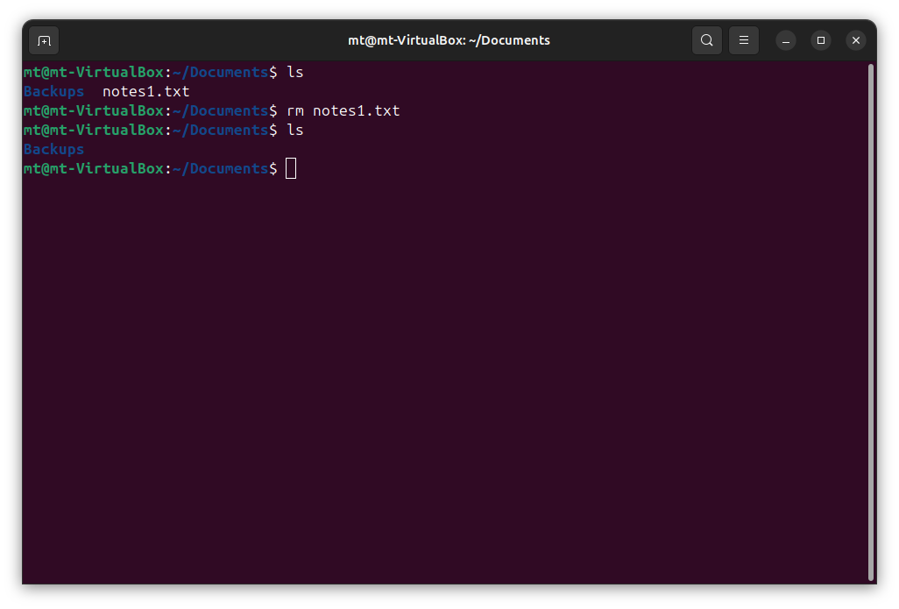
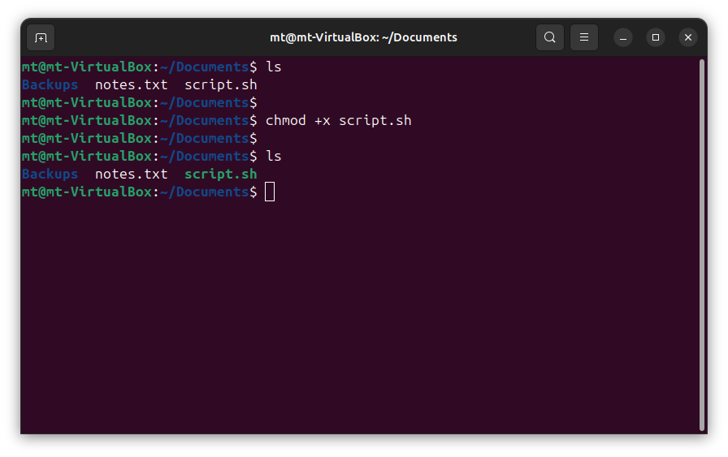

The following outlines Essential Linux Commands that form a great foundation when starting out with Linux and other Unix-based systems.
Linux is everywhere — it powers over 70% of the world’s servers and dominates cloud infrastructure. You'll find Linux running on web servers, networking equipment, IoT devices, embedded systems, mobile phones, and more. From data centers to smart homes, Linux is at the core of modern computing.
For anyone working with Linux, having a strong command-line foundation is essential and beneficial depending on what circumstances are encountered. In this blog, I’ll share some Essential Linux Commands that are fundamental and go a long way in helping to navigate the filesystem and work confidently in a Linux terminal.
pwdWhat it does: Shows where you are in the filesystem.
lsWhat it does: Lists the contents of the current directory.
Running ls -l with the -l flag provides a long listing format for detailed output:
cdWhat it does: Moves between directories.
This example changes from /home/mt directory to the /var/log directory:
mkdirWhat it does: Creates new directories/folders.
cpWhat it does: Copies a file or directory to another location.
In this example, the cp command is used to copy a file from one directory to another. The file notes.txt is copied from the /home/mt/Documents directory to the /home/mt/Downloads directory. This demonstrates how cp allows you to duplicate files while keeping the original intact in its current location.

mvWhat it does: Moves or renames files or directories.
In this example, the mv command is used to move a file from one directory to another. The file notes.txt, located in the Downloads directory, is moved to the Documents directory by specifying the full source and destination paths. This demonstrates how mv can be used to relocate files across directories in the filesystem.

In this example, the mv command is used to rename a file. The original file notes.txt is renamed to notes1.txt by specifying the old name as the source and the new name as the destination. This shows how mv can be used not only to move files between directories but also to rename them within the same location.

touchWhat it does: Quickly creates a new, empty file or updates the timestamp of an existing one.
In this example, the touch command creates a file named notes.txt:
In this example, the touch command is used to update the timestamp of an existing file after using the mv command to change the name to notes1.txt. The file notes1.txt already exists, and running touch notes1.txt updates its last modified time to the current time, as shown by the updated timestamp in the second ls -l output. This is useful for signaling recent activity or triggering automation tools that monitor file changes.
rmWhat it does: Deletes files from the filesystem.
rm -rWhat it does: Deletes a directory and all of its contents.
Before running rm -r, multiple commands are chained together on one line to first create a directory, navigate into it, create two files, and list the contents. This is a neat feature in Linux that allows you to execute several commands in a sequence using semicolons (;), making it easier to automate or set up demo environments quickly without writing a script.

catWhat it does: Displays the contents of files.
This example concatenates the contents of the /etc/os-release file to display the Linux distribution information:
headWhat it does: Displays the first 10 lines of a file.
tailWhat it does: Displays the last 10 lines of a file.

grepWhat it does: Searches for patterns in text files.
This example searches for "error" in the /var/log/syslog file:

psWhat it does: Lists active processes running under your session.
The basic ps command shows the processes associated with the current terminal session. However, running ps aux expands the view to include:
ps aux especially useful for checking system-wide activity or when piping into grep to look for specific services.
htopWhat it does: Displays a live system monitor for processes and resource usage.
The htop command is essentially Task Manager (Windows), in the Linux environment.
Typing htop into the Linux terminal and pressing Enter brings this up in terminal output:

chmodWhat it does: Modifies read/write/execute permissions for users or groups.
+x makes a file executable:
chown
In this example, the command:
sudo chown root:root script.sh
does the following:
sudo — runs the command with elevated privileges, which are required for changing ownership.chown — invokes the change ownership command.root:root — assigns ownership to the user root and the group root.script.sh — is the target file whose ownership is being changed.
This means that after running the command, only the root user (and root group) will own the file script.sh, which may restrict access for other users.

manWhat it does: Displays built-in documentation for any Linux command.
This is the best way to learn options, syntax, and usage examples for different commands.
This example shows the documentation for the grep command:

sudoWhat it does: Executes commands with elevated privileges.
The sudo command allows a regular user to run specific commands as the root user, typically with a password prompt.
In contrast, sudo su elevates the current user to a full root shell session — meaning all following commands will be executed as root until the session ends.
Both are essential for system-level changes and administrative tasks.

Mastering these commands builds a solid foundation for working with Linux. They're usually the first tools you rely on when navigating the filesystem and handling everyday tasks.
What are some of your favorite Linux commands?
Back to Home